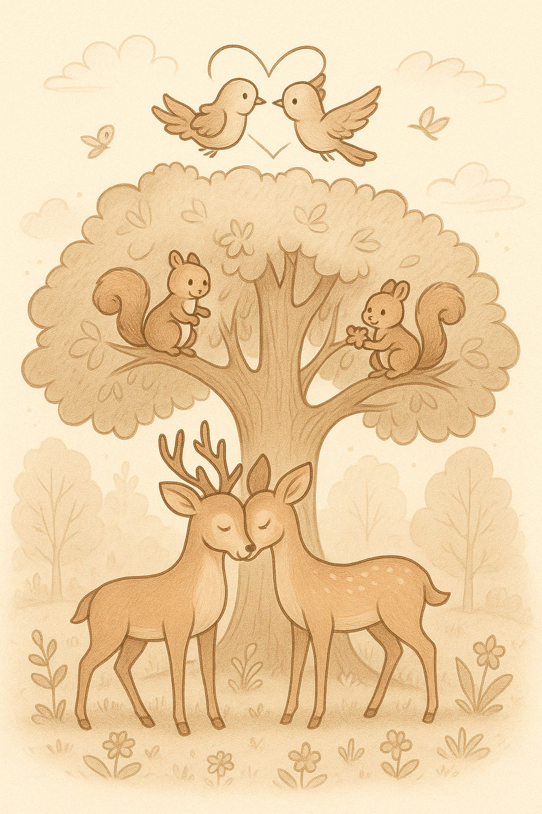
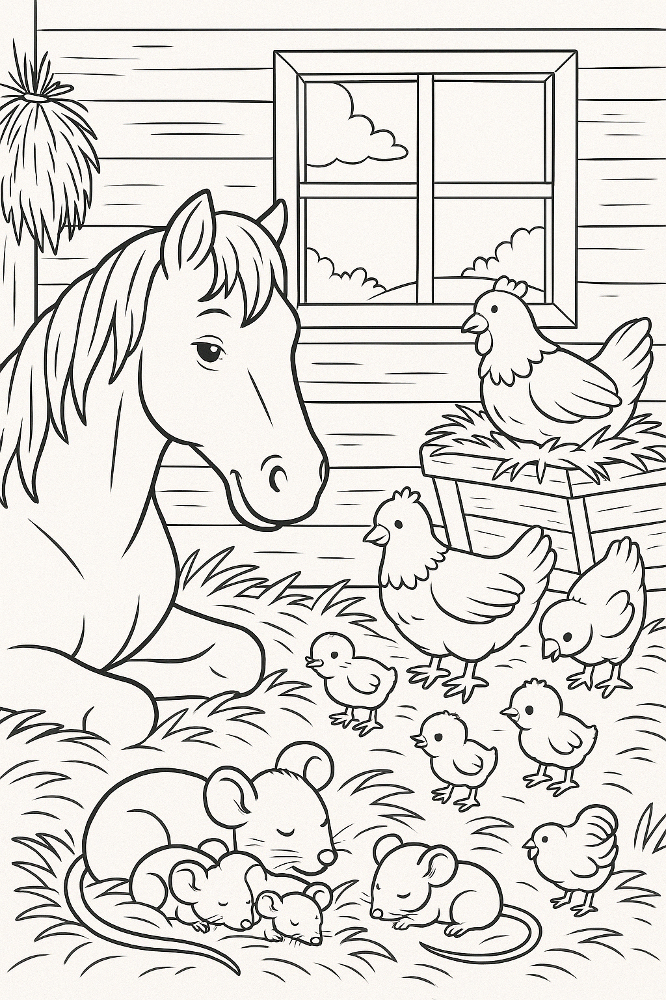

Kleurplaten: Moeder Natuur & Dierenrijk
Boerderij in de Morgen

Een vredige boerderij met schapen, koeien en een opkomende zon. Kleur het leven op het platteland.
♥ Print ♥Boom vol Dierenliefde
Vogels, eekhoorns en vlinders wonen samen in deze liefdevolle boom. Breng hun wereld tot leven!
♥ Print ♥Stal en Vrienden
Kleine muisjes, kippen en geiten deelt hun stal met jou. Kleur hun vreugde en kameraadschap.
♥ Print ♥